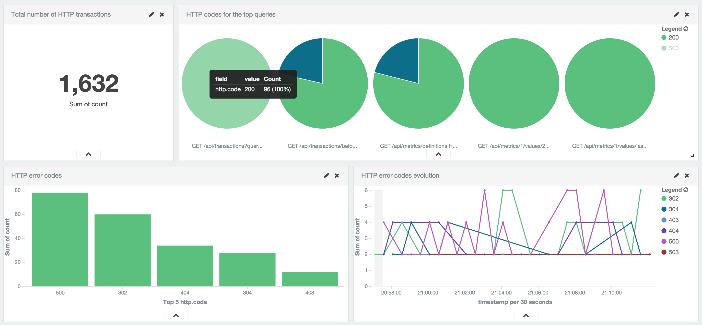
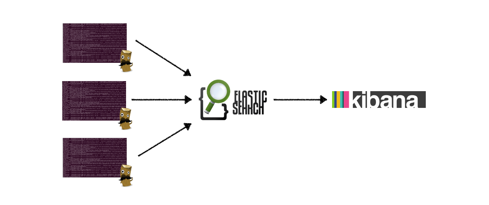
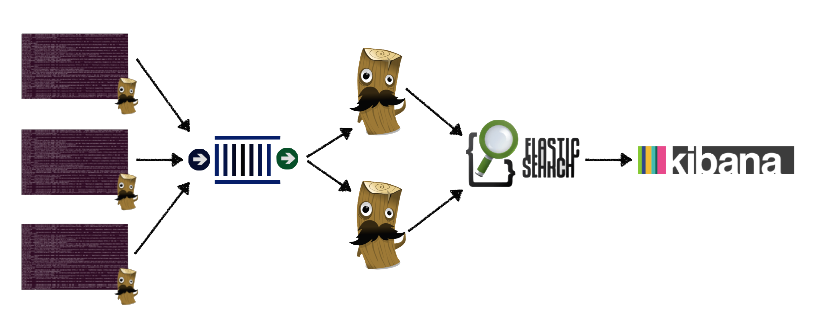

Analyzing Time-Series Data
with Elasticsearch, Logstash, and Kibana
What's the Problem?
Going from this

to this
What's in our toolkit?
Basic architecture
Logstash
Plugin-Based
Event Processing Pipeline
The Pipeline
$ cat logstash-apache.conf
input {
...
}
filter {
...
}
output {
...
}
$ logstash --config logstash-apache.confSample Configuration File
input {
file {
path => "/var/log/apache/access.log"
}
}
filter {
grok {
match => [ "message", "%{IP:client} %{WORD:method} %{URIPATHPARAM:request} %{NUMBER:bytes:int} %{NUMBER:duration}" ]
}
geoip {
source => "client"
}
}
output {
elasticsearch {
host => "192.168.0.23"
}
}
Output Plugins
elasticsearch
,
email ,
nagios ,
pagerduty ,
hipchat
,
zeromq ,
rabbitmq ,
sqs ,
redis
,
http
,
…
Elasticsearch
- Search and Analytics engine
- Supports fast full-text, structured, and aggregations queries
- Distributed architecture
- Has HTTP/RESTful API
- Stores data as documents
- Accepts documents as JSON
- 1 Logstash event = 1 Elasticsearch document
{
"@timestamp": "2015-09-17T01:04:32Z",
"client": "234.56.78.90",
"method": "GET",
"request": "/index.html",
"bytes": 98412,
"duration": 231
}
- Documents are stored in user-defined indices
- Default indices created by Logstash are named
logstash-YYYY.MM.DD - Can accept documents one-by-one or in bulk
- Logstash uses bulk API
Kibana
Deployment Patterns
Basic — One Machine
Basic — Multiple Machines
Two Tiers — Shippers and Transformers
Beats
Data Shippers for Elasticsearch
- Packetbeat — for network packet analysis
- Topbeat — for system metrics analysis
- Filebeat — future replacement for logstash-forwarder
- BYOBeat — developer guide: creating a new Beat
Summary
Elasticsearch, Logstash, and Kibana
Deployment Patterns
Beats
Questions?
Shaunak Kashyap • @shaunak